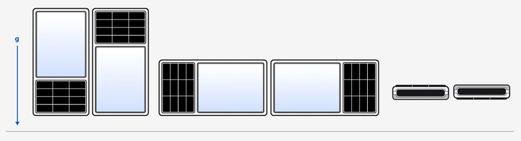

QOrientationReading Class Reference
The QOrientationReading class represents one reading from the orientation sensor. More...
#include <QOrientationReading>
Inherits QSensorReading.
This class was introduced in Qt Mobility 1.0.
Public Types
| enum | Orientation { Undefined, TopUp, TopDown, LeftUp, ..., FaceDown } |
Properties
- orientation : const Orientation
- 1 property inherited from QSensorReading
- 1 property inherited from QObject
Public Functions
| Orientation | orientation () const |
| void | setOrientation ( Orientation orientation ) |
- 4 public functions inherited from QSensorReading
- 29 public functions inherited from QObject
Additional Inherited Members
- 1 public slot inherited from QObject
- 1 signal inherited from QObject
- 1 public variable inherited from QObject
- 4 static public members inherited from QObject
- 7 protected functions inherited from QObject
- 2 protected variables inherited from QObject
Detailed Description
The QOrientationReading class represents one reading from the orientation sensor.
The orientation sensor reports the orientation of the device. As it operates below the UI level it does not report on or even know how the UI is rotated. Most importantly this means that this sensor cannot be used to detect if a device is in portrait or landscape mode.
This sensor is useful to detect that a particular side of the device is pointing up.
QOrientationReading Units
The orientation sensor returns the orientation of the device using the pre-defined values found in the QOrientationReading::Orientation enum.
Member Type Documentation
enum QOrientationReading::Orientation
This enum represents the orientation of the device.
To explain the meaning of each value it is helpful to refer to the following diagram.

The orientations are shown here in order: TopUp, TopDown, LeftUp, RightUp, FaceUp, FaceDown.

| Constant | Value | Description |
|---|---|---|
| QOrientationReading::Undefined | 0 | The orientation is unknown. |
| QOrientationReading::TopUp | 1 | The Top edge of the device is pointing up. |
| QOrientationReading::TopDown | 2 | The Top edge of the device is pointing down. |
| QOrientationReading::LeftUp | 3 | The Left edge of the device is pointing up. |
| QOrientationReading::RightUp | 4 | The Right edge of the device is pointing up. |
| QOrientationReading::FaceUp | 5 | The Face of the device is pointing up. |
| QOrientationReading::FaceDown | 6 | The Face of the device is pointing down. |
It should be noted that the orientation sensor reports the orientation of the device and not the UI. The orientation of the device will not change just because the UI is rotated. This means this sensor cannot be used to detect if a device is in portrait or landscape mode.
Property Documentation
orientation : const Orientation
This property holds the orientation of the device.
The unit is an enumeration describing the orientation of the device.
Access functions:
| Orientation | orientation () const |
See also QOrientationReading Units.
Member Function Documentation
void QOrientationReading::setOrientation ( Orientation orientation )
Sets the orientation for the reading.
See also orientation().